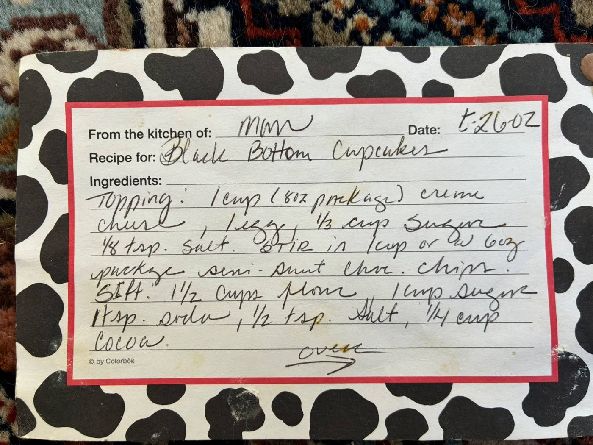
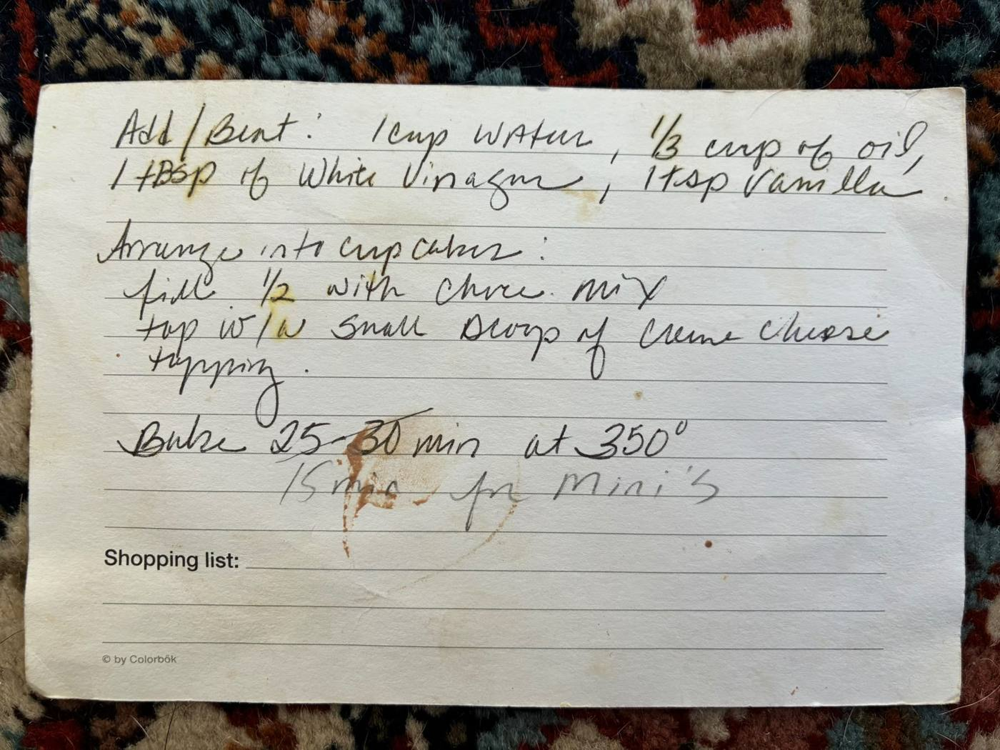

Desserts
Black Bottom Cupcakes
From the kitchen of Mom
Oven350°F
Bake25–30 min
Minis15 min


Mom's original card (front and back) · tap to enlarge
Ingredients
Cream cheese topping
Chocolate batter — sift
Chocolate batter — add and beat
Method tap a step to mark it done
- Topping: mix the cream cheese, egg, sugar and salt; stir in the chocolate chips.
- Sift together the flour, sugar, baking soda, salt and cocoa.
- Add the water, oil, vinegar and vanilla, and beat.
- Fill cupcake cups ½ full with the chocolate batter, then top each with a small scoop of the cream cheese topping.
- Bake at 350°F for 25–30 minutes (start checking at 25).
- For mini cupcakes, bake 15 minutes.